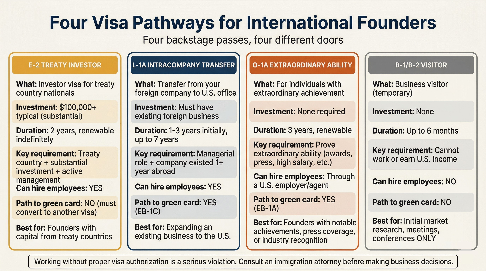

Visa Pathways — What's Actually Realistic
Visa Pathways — What's Actually Realistic
7 scenes — Media not yet generated
Important Disclaimer — Read This First
What if you could work in the U.S. legally, but picked the wrong visa and lost months of progress? Completing this program does not influence or guarantee visa approval. This content is educational only, and visa outcomes depend on individual circumstances and are determined solely by U.S. immigration authorities.
Immigration law is complex and highly individual. The information below provides a general awareness-level overview. All visa and immigration actions should be reviewed with a qualified immigration attorney who can assess your specific circumstances.
Earning Your Backstage Pass: Visa Pathways for International Founders
In the last lesson, you learned who belongs on your team and how the U.S. classifies each role. Now the question turns to you: what pass gets you through the gate?
In Central Florida's entertainment district, no one walks backstage without the right credential. The same is true for working in the U.S. Owning a company does not by itself give you the right to work here. A Colombian founder with 50,000 fintech users assumed she could fly to Miami and run a U.S. office, but her tourist visa did not allow it.
Several visa paths exist with different needs, costs, and timelines. The right path depends on your citizenship, track record, capital, and current business. What follows is an awareness-level overview, not a substitute for legal advice.
Did You Know?
Central Florida's tourism and entertainment sector relies heavily on international talent. The Orlando metro area is home to one of the most internationally diverse workforces in the Southeast, with residents from over 100 countries. Many of the region's entertainment executives, hospitality managers, and tech professionals originally arrived on the same visa categories covered in this lesson before building long-term careers in the area.
Four Pathways Into the U.S. Market
Think of each visa as a different backstage pass to the U.S. market. Each one opens different doors, costs different amounts, and takes different timelines to obtain. The four pathways below are the ones most commonly used by international founders — explore each one to understand the requirements, costs, and realistic timelines.
Visa Pathways — Detailed Breakdown
Requirements: Demonstrate extraordinary ability in business, science, education, or athletics through national/international recognition.
Timeline: 2–6 months (premium processing available)
Cost: $5,000–$10,000+ (filing + attorney)
Realistic for: Founders with publications, awards, significant press, or high salary history. Strong option if you have evidence of being in the top of your field.
Requirements: Citizen of a treaty country, substantial investment in a U.S. business, must direct and develop the enterprise.
Timeline: 2–4 months (consular processing)
Cost: $3,000–$8,000+ (investment must be 'substantial' — typically $100K+)
Realistic for: Most LATAM founders with capital to invest. Brazil and some countries are NOT treaty countries — check eligibility first.
Requirements: Must have worked for a related company abroad for 1+ year in a managerial/executive role. Transferring to a U.S. office.
Timeline: 3–8 months
Cost: $3,000–$8,000 (filing + attorney)
Realistic for: Founders expanding an existing company to the U.S. You must prove the foreign entity remains active.
Requirements: Bachelor's degree in a specialty field. Employer (can be your own company) sponsors you.
Timeline: Annual lottery (April), start date October 1
Cost: $3,000–$10,000
Realistic for: Least ideal for founders — lottery-based, employer-dependent, 6-year cap. Better for employees you want to hire.

Before You Spend Money: What Visa Applications Actually Cost
Now, let's look at the numbers. As of early 2026, total visa costs (attorney fees + government filing fees) typically range from:
- O-1A: $5,000–$10,000+ (attorney) + $2,805 (premium processing, optional) + filing fees
- E-2: $3,000–$8,000+ (attorney) + $315 (filing fee) + investment capital
- L-1A: $4,000–$10,000+ (attorney) + $2,805 (premium processing, optional) + filing fees
- H-1B: $2,000–$5,000+ (attorney) + registration fee + filing fees
These are attorney and filing costs only. The E-2 also requires you to show a substantial capital investment in the business itself. Budget for the attorney consultation ($250–$500/hour) as your first step. A good attorney will tell you honestly which pathways are realistic before you spend thousands on an application.
Choosing Your Guide — How to Find the Right Immigration Attorney
In any complex park, you want a guide who knows which doors lead where. The same applies here: look for an attorney who specializes in business immigration, not general practice. Central Florida has a strong base of immigration attorneys experienced with international entrepreneurs, given the region's deep ties to global tourism and trade. The AILA directory is a starting point, but referrals from other founders in the UCF BIP network are often more reliable. Be cautious of anyone who guarantees outcomes — no one can promise which credential you will receive.
The bottom line? Prepare for your consultation with: passport, existing visa documentation, proof of business operations (revenue, employees, clients), evidence of achievements (awards, publications, patents), and your U.S. business plan.
Keep in mind that standard visa processing can take 4 to 8 months or longer depending on the visa type and your country of citizenship. Some visas offer premium processing (15 business days) for an additional fee, but not all do. The H-1B lottery happens once per year in March, with an October start date if selected. Start exploring your visa options 6 to 12 months before you need to be working in the U.S. Rushing leads to weak applications and denials. A lawyer who is honest about your timeline is more valuable than one who promises speed.
Common Mistakes International Founders Make — Visa Authorization
One of the most serious mistakes: working in the U.S. without proper visa authorization. As a founder, your own visa status determines what work you can legally do. Hiring others does not exempt you from your own immigration requirements. Working outside your authorization can result in deportation and permanent bars from reentry. Make sure your visa covers the activities you are actually performing.
Reflect & Check Your Understanding
Reflection
Based on the overview above, which visa pathway or pathways seem most relevant to your situation? Write down your country of citizenship, your current business track record (years, revenue, employees, recognition), and the amount of capital you could invest. Bring these notes to a consultation with an immigration attorney so they can give you specific guidance.
What Would You Do?
Question 1 of 3A founder from Colombia has a successful tech company with 200 employees and wants to open a U.S. office. She has been the CEO for three years. Which visa pathway would her immigration attorney most likely explore first?
The L-1A (Intracompany Transfer) is designed for founders and managers who already run a foreign company and want to open or manage a U.S. office. The key requirements — a managerial role at a qualifying foreign company for at least one year — fit this founder's situation well. However, an immigration attorney would evaluate all options based on her specific circumstances.
A founder from Mexico owns a profitable e-commerce company and has $120,000 to invest in a U.S. operation. She has no extraordinary achievements or awards, and she has never managed a U.S.-affiliated company. Her immigration attorney would most likely explore which visa pathway first?
The E-2 Treaty Investor visa fits this scenario best. Mexico has a treaty with the U.S., and the founder has $120,000 in investment capital, which exceeds the typical $100,000+ threshold attorneys recommend. The O-1A requires extraordinary ability evidence she does not have. The L-1A requires an existing qualifying relationship between a foreign and U.S. company. The H-1B is lottery-based and less common for founders.
A founder from Argentina wants to open a U.S. office in six months. She has $150,000 in investment capital, no extraordinary achievements or awards, and has never managed a U.S.-affiliated company. Argentina is an E-2 treaty country. Based on the cost and timeline data in this lesson, what should she budget and plan for?
The E-2 Treaty Investor visa fits her profile: Argentina is a treaty country and she has $150,000 in capital. Attorney and filing costs typically run $3,000–$8,000+, and consular processing takes 4–8 months, so she should start now to meet her six-month timeline. The H-1B (option B) is lottery-based with rigid timing and less suited for founders. Self-filing (option C) is risky for a complex visa application. Working on a tourist visa (option D) violates immigration law and can result in deportation.
Key Takeaway
Four backstage passes, four different doors — but none are handed out automatically. Start the visa process 6 to 12 months before you need to be working in the U.S. Work with an immigration attorney who specializes in business immigration and who will be honest about which credential fits your situation. Evaluate which pathway matches your track record and capital, then create a realistic schedule for the application process. The right legal guidance early on prevents expensive mistakes later.
What You Need to Know
- Compare visa pathways that may be available (O-1, E-2, L-1, H-1B) — all visa and immigration actions should be evaluated with an immigration attorney
- Assess which visa pathway is realistic based on their specific situation
- Estimate visa application costs and processing timelines